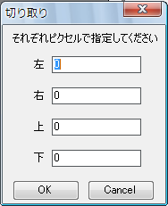
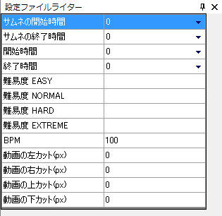
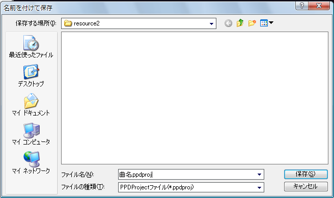

가장 먼저 패턴을 만들 동영상(의 곡)의 BPM을 측정합니다.
BPM은 1분에 몇번 비트하는지, 즉 곡의 속도를 나타냅니다(클수록 템포가 빠른 곡입니다)
PPDEditor에는BPM 측정이라는 내장 BPM 측정 기능이 있습니다.
BPM을 잘 알 수 없으면 검색창에다 「노래제목 BPM」처럼 검색해 보시기 바랍니다.
또는 mp3 음원을 해석해서 자동으로 BPM을 계산하는 「MixMeister BPM Analyer」라는 무료 소프트웨어도 있습니다.
하지만 이러한 자동 측정은 측정값의 신뢰도가 떨어질 수 있으므로 한 번 정도는 수동으로 측정해서 확인해 보시기 바랍니다.
이렇게 BPM값을 얻을 수 있습니다.
BPM값을 측정했다면 BPM을 도구 모음 가장 왼쪽의 글 상자에 입력합니다.
(마우스포인터를 올려놓으면 "BPM"이라고 뜨는 글 상자입니다)

동영상의 비율을 맞춰 잘라냅니다.
현재의 동영상의 크기는 속성 창에 쓰여져 있습니다.

PPD의 창 크기는 16:9에 맞춰져 있습니다(800*450px)
그러므로 16:9의 동영상에 대해서는 자르기 설정을 할 필요가 없지만
그렇지 않은 동영상은 가로 세로 비율을 고정하기 위해 설정을 해 둡니다.
예를 들면, 흔히 512*384 px의 동영상(4:3 비율)의 동영상은 위아래로 검은 줄이 있는 영상이 많습니다.
이때 검은 줄 부분을 제외하면 16:9 비율이 되는 동영상이 많기 때문에 검은줄을 잘라내도록 합.
메뉴에서 동영상→자르기를 선택합니다

다음 창이 표시됩니다.

제외해야 할 검은 줄의 폭을 계산합니다.
검은 줄의 높이를 black_height, 동영상의 폭을 movie_width, 높이를 movie_height로 합시다.
그러면 다음과 같은 방정식을 만들 수 있습니다.
movie_width:movie_height-2*black_height=16:9
⇔16*(movie_height-2*black_height) =9*movie_width
⇔black_height=1/2(movie_height-9/16*movie_width)
...이렇다고 합니다.
그냥 아래 칸에서 계산 할 수 있도록 만들어 뒀습니다.
위의 검은줄의 높이를 앞의 자르기 창의 위와 아래에 입력한 뒤 OK를 누릅니다.
그러면 동영상이 잘려져 16:9 동영상으로 나옵니다.
다른 예로서 검은 줄이 없는 512*384 px의 동영상(4:3)에 대해서 좌우에 검은 줄을 추가해 가로 세로 비율을 4:3으로 바꿔야 할 때도 있습니다.
이때는 왼쪽과 오른쪽에 -100을 입력해 주세요.(위와 아래는 0)
설정 파일 작성기를 켜고 정보를 입력합니다.

미리 보기 시작 시간, 미리 보기 끝 시간, 노래 시작 시간, 끝 시간은 오른쪽의 삼각형에서「타임 라인에서 불러오기」를 고르면
동영상의 현재의 시간을 입력할 수 있습니다.
미리 보기 시작 시간은 PPD의 메뉴 화면에서 재생을 시작하는 시간입니다. 클라이맥스의 시작 시간이 좋겠습니다.
미리 보기 끝 시간은, PPD의 메뉴 화면에서 재생이 끝나는 시간입니다. 클라이맥스의 끝 시간이 좋겠습니다.
시작 시간은 게임에서의 동영상(노래)의 시작 시간입니다. 동영상에 따라 바뀔 수도 있지만 일반적으로 0을 사용합니다.
동영상의 시작이 너무 갑작스러우면 -1,-2등으로 동영상의 시작 시간을 미룰 수 있습니다.
끝 시간은 게임에서 동영상이 끝나느 시간입니다. 동영상의 마지막 시간이 적당합니다.
각 난이도는 양심적으로 설정해 주세요. 자신이 표시하고 싶은 어떤 글도 넣을 수 있습니다. 일반적으로 ★의 갯수를 적거나 ★×(숫자)가 가장 보편적입니다.
다 만든 뒤 배포하기 직전에 결정해도 상관없습니다.
BPM에는 측정한 BPM을 넣읍시다.
동영상 자르기는 방금 전 설정한 동영상의 자르기 설정을 넣습니다. 0이라면 0을 모두에 입력해 주세요.
일단 여기서 한 번 프로젝트를 저장합시다.
프로젝트 새로 만들기 기능으로 프로젝트를 만들었다면 이미 프로젝트가 있으므로 Ctrl+S 혹은 파일→프로젝트 저장을 선택해 주세요.
다음 설명은 프로젝트 새로 만들기 기능을 사용하지 않고 설정을 먼저 했을때의 저장 방법입니다.
파일→프로젝트 다른 이름으로 저장을 선택합니다.

창이 표시되면 파일명을「노래제목.ppdproj」로 해서 저장합니다.

다음 번부터는 「프로젝트 저장」을 선택해서 덮어쓰면서 저장합시다.
또 프로젝트를 열 때는 저장한한 「노래제목.ppdproj」를 선택해주세요.
다음에는 노트를 입력해 보겠습니다.
다음으로